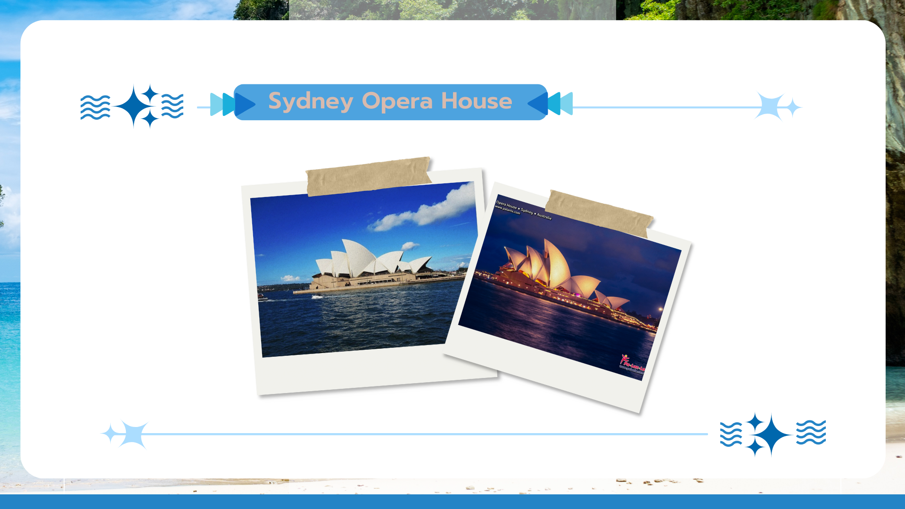

SYDNEY OPERA HOUSE
โรงโอเปราซิดนีย์เกิดขึ้นได้เพราะคนกล้าหาญไม่กี่คนกล้าที่จะคิดต่างออกไป ตั้งแต่เริ่มวางแผนจนถึงสร้างเสร็จสมบูรณ์ อาคารแห่งนี้ได้ทดสอบขีดจำกัดของวิศวกรรม การก่อสร้าง และการออกแบบ
อาคารชิ้นเอกที่ออกแบบโดยสถาปนิกชาวเดนมาร์ก ยอร์น อุตซอน ซึ่งได้รับการขึ้นทะเบียนเป็นมรดกโลก ถือเป็นความก้าวหน้าครั้งสำคัญในสถาปัตยกรรมสมัยใหม่ รูปทรงใบเรืออันโด่งดังได้กลายเป็นสัญลักษณ์ของซิดนีย์และออสเตรเลียสมัยใหม่โดยรวม
เมื่อโรงโอเปราแห่งนี้เปิดประตูต้อนรับผู้ชมในปี 1973 ยุคแห่งการค้นพบทางวัฒนธรรมใหม่ก็เริ่มต้นขึ้น ห้าทศวรรษต่อมา โรงโอเปราแห่งนี้กลายเป็นจุดหมายปลายทางการท่องเที่ยวชั้นนำของประเทศ ศูนย์ศิลปะการแสดงที่คึกคักที่สุดแห่งหนึ่งของโลก และเป็นสถานที่พบปะสังสรรค์ของชุมชนที่เป็นของชาวออสเตรเลียทุกคน โปรแกรมการแสดงของที่นี่ครอบคลุมศิลปะหลากหลายรูปแบบและดึงดูดผู้ชมหลากหลายกลุ่มทั้งที่มาชมด้วยตนเองและทางออนไลน์
เรียนรู้เพิ่มเติมเกี่ยวกับเรื่องราวของเราและการมีส่วนร่วมของเราในด้านวัฒนธรรม มรดก ความยั่งยืน และการท่องเที่ยว